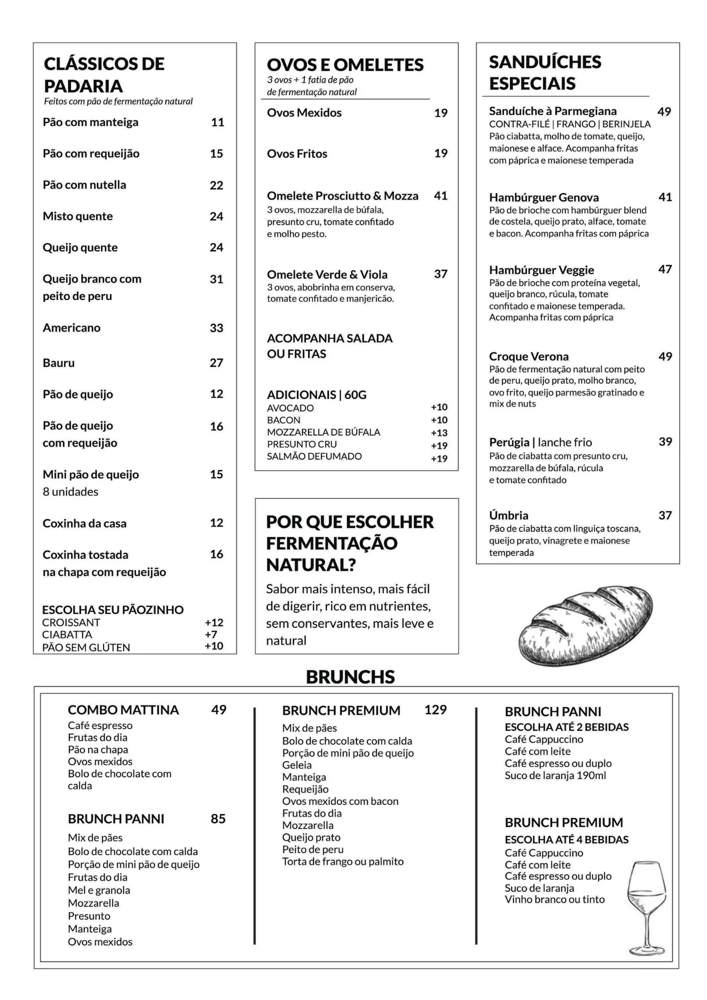
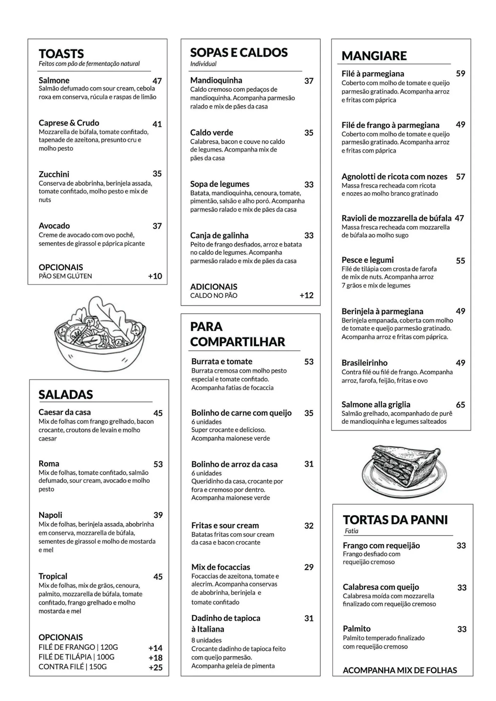
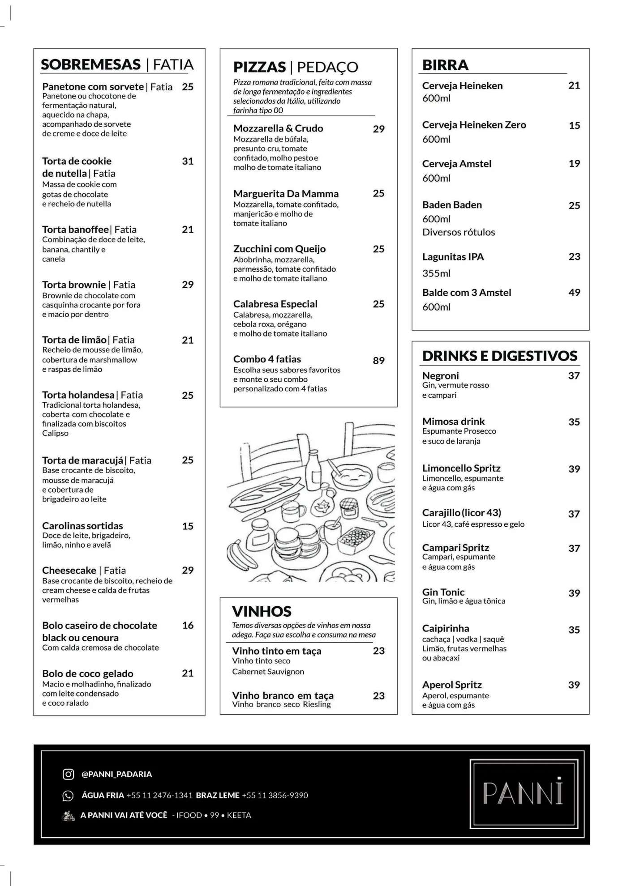

Unidade Água Fria · Rua Ismael Neri, 485
Cardápio Água Fria.
Os pratos e preços desta casa. Para pedir para levar ou receber em casa, use o cardápio digital.




Os pratos e preços desta casa. Para pedir para levar ou receber em casa, use o cardápio digital.


